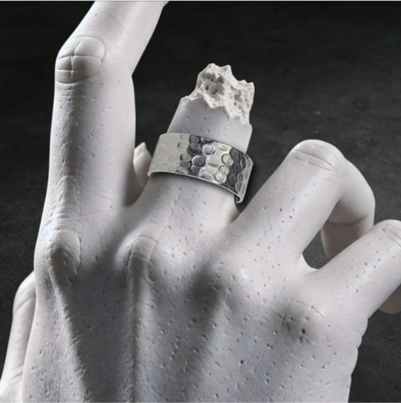
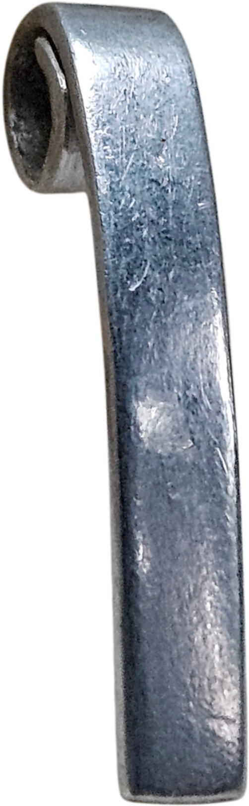
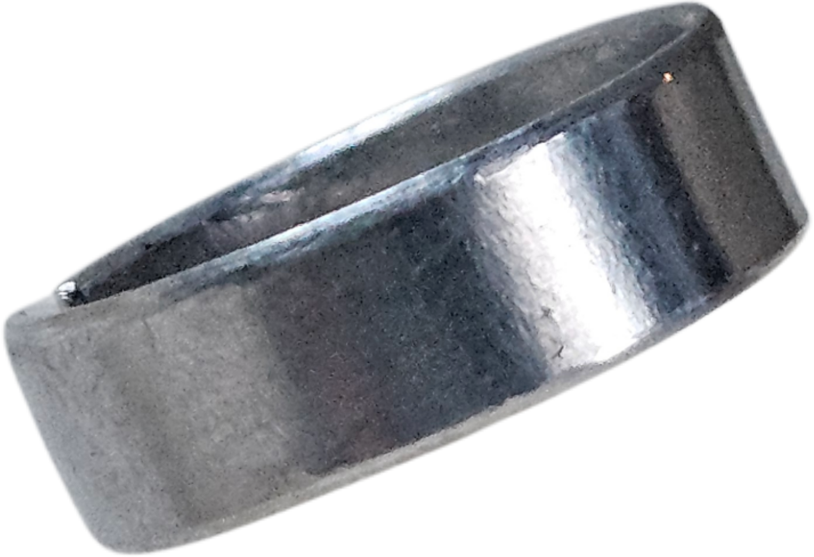

01Handmade in Germany · Aluminium · Einzelstücke
Oberfläche
ist Identität.
Handgefertigter Aluminiumschmuck, bei dem Spuren, Druck, Bruch und Bewegung nicht versteckt werden. Jede Oberfläche macht das Stück zu seinem eigenen Objekt.
Nickelfreies AluminiumVon Hand bearbeitetLeicht & unisex
01 / MATERIAL

ALUMINIUM / HANDARBEITCIRCUITCURIOS
Kein aufgedrucktes Muster.
Die Bearbeitung selbst wird zum Motiv.01 — Arbeiten
Material.
Spur. Form.
Kleine Serien und Einzelstücke aus Aluminium. Die Oberfläche entsteht durch mechanische Bearbeitung, Druck, Schlag, Reibung und kontrollierte Unregelmäßigkeit.

0203
02 — Oberflächen
Keine Textur
ist nur Dekor.
Die Namen beschreiben keine Stilrichtung, sondern den Ausgangspunkt der Bearbeitung.
Deformation
Druck, Verschiebung und Bruch verändern die Fläche sichtbar.
Kräfte
Reibung, Schlag und Bewegung hinterlassen gerichtete Spuren.
Mikrostruktur
Feine Linien und Bearbeitungsspuren bleiben Teil des fertigen Stücks.
03 — Prozess
Material zuerst.01
Form
Aluminium wird geschnitten, geformt und an das einzelne Stück angepasst.
02
Oberfläche
Die Struktur entsteht direkt am Material und wird nicht nachträglich aufgedruckt.
03
Finish
Kanten, Oberfläche und Tragegefühl werden von Hand fertiggestellt.
04 — CircuitCurios Studio
Vom Werkstück
bis zur Veröffentlichung.
CircuitCurios entwickelt eigene interne Werkzeuge für Produktbilder, Texturen, Listings und Veröffentlichungsabläufe.
Die Pinterest-Integration des CircuitCurios Studio wird ausschließlich verwendet, um eigene CircuitCurios-Inhalte und eigene Boards nach erfolgreicher OAuth-Autorisierung zu verwalten.
Datenschutz & Pinterest-Integration →05 — Über CircuitCurios
Schmuck darf zeigen, wie er entstanden ist.
CircuitCurios verbindet handwerkliche Metallbearbeitung mit einer reduzierten, technischen Formensprache. Im Mittelpunkt stehen Aluminium, Oberfläche und die sichtbaren Spuren des Herstellungsprozesses.
Shop
Aktuelle Stücke auf Etsy